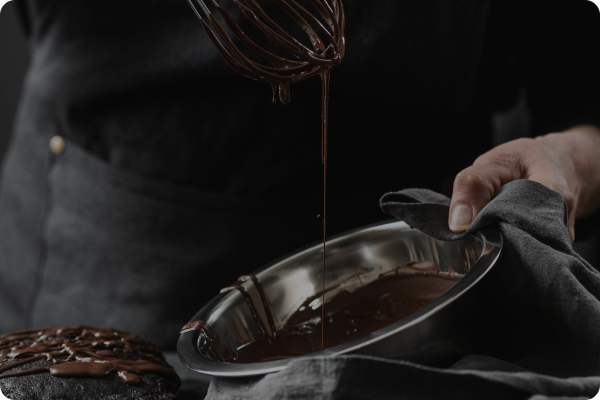

It all adds up to one exceptional taste sensation

MILK CHOCOLATE

MILK

NUTS

SEMI - SWEET CHOCOLATE

CACAO

RASPBERRY

COCONUT OIL
How it’s made?

Try our chocolates today and discover the perfect balance of flavor
- Heat the milk in a saucepan without bringing it to a boil. Add sugar and cocoa powder.
- At the same time, prepare a water bath. Melt the butter on it.
- "Mix" the milk mixture and already liquid butter. Mix thoroughly with a silicone spatula so that the mass becomes uniform and silky.
- Heat the mixture over low heat, letting it barely boil.
- Pour the chocolate into special containers (can be replaced with ice molds). Allow to cool and harden.